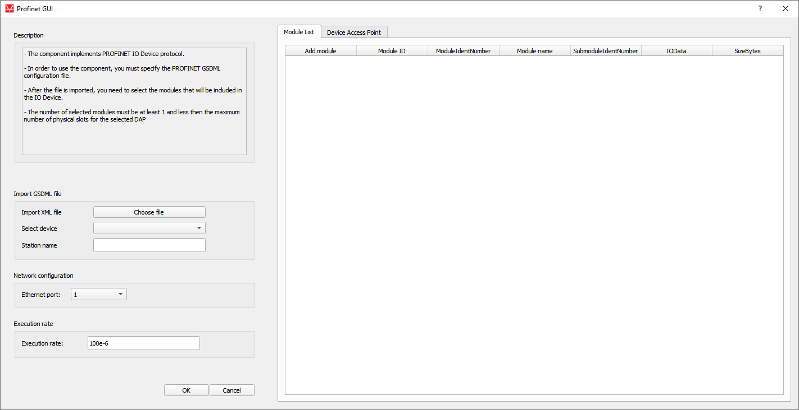
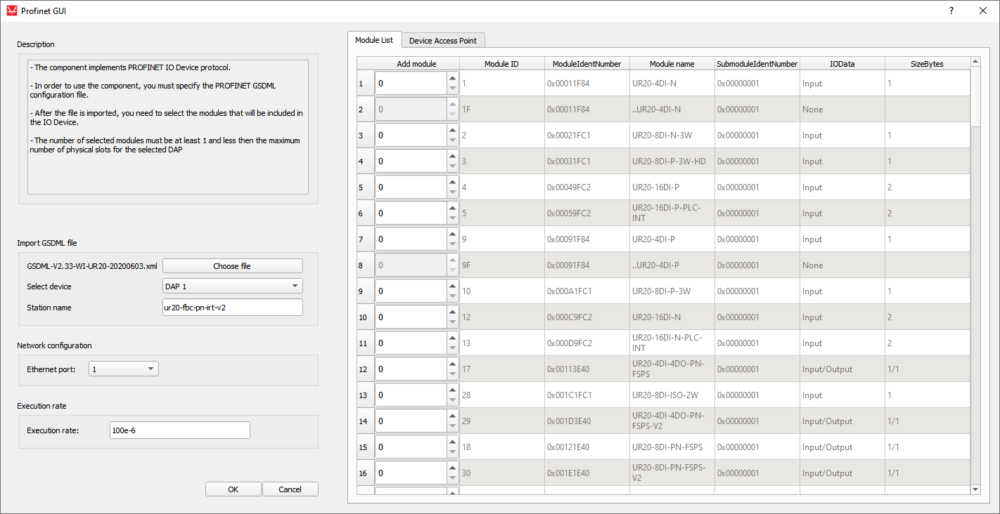
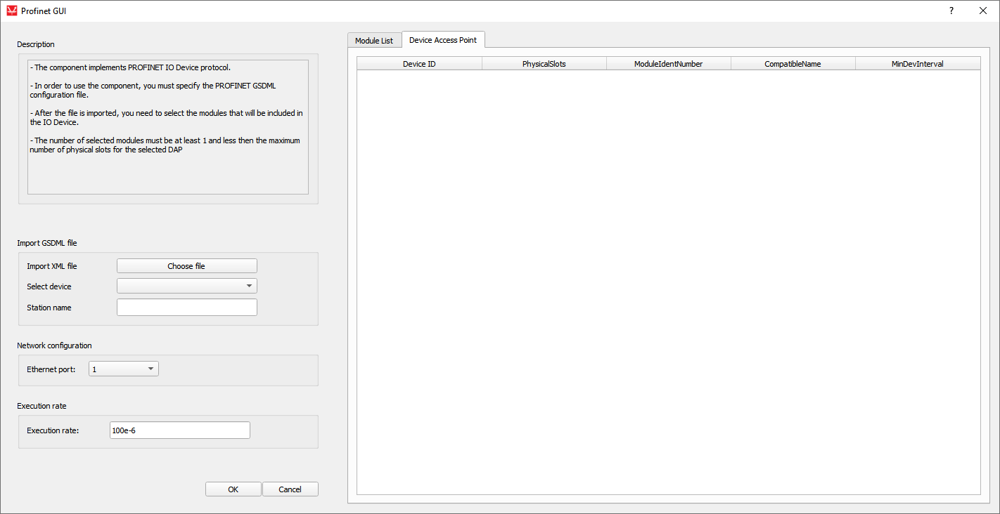
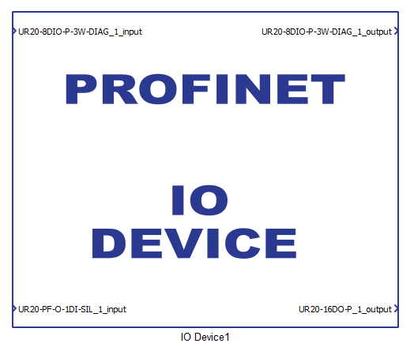
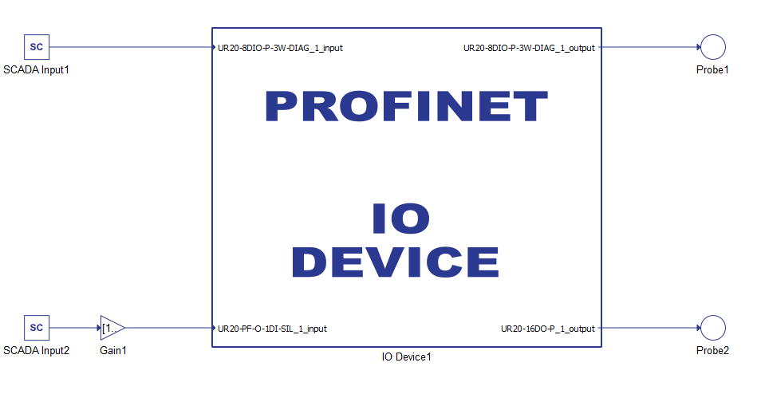

PROFINET IO Device
Description of the PROFINET IO Device component in Schematic Editor.
Introduction to PROFINET protocol
PROFINET protocol is an industry technical standard for data communication over industrial Ethernet, designed for collecting data from, and controlling equipment in industrial systems, with a particular strength in delivering data under tight time constraints. The data exchange mechanism for PROFINET protocol is a provider consumer model. This model is more flexible than the master-slave framework that PROFIBUS uses. In PROFINET networks, controllers and IO devices can both assume consumer and provider roles, leveraging the full duplex nature of Ethernet. The controller provides output data to the configured IO devices in its role as provider and is the consumer of input data from IO devices. The IO device is the provider of input data and the consumer of output data.
- Acyclic: Unscheduled, on demand communications. Diagnostic messages from an IO Supervisor to an IO Device are Acyclic.
- Cyclic: Scheduled, repetitive communications. I/O data and alarm transfers are cyclic.
- The IO Controller, which controls the automation task, typically a PLC, DCS, or IPC.
- The IO Device, which is a field device, is monitored and controlled by an IO Controller. There are various types of IO Devices: I/O blocks, drives, encoders, gateway, sensors, valves. An IO Device can consist of several Modules and Submodules.
- The IO Supervisor is a software typically based on a PC for setting parameters and diagnosing individual IO Devices
The IO Device is implemented in the Typhoon HIL toolchain.
- Conformance Class A (CC-A) provides real-time and acyclic real-time, as well as support for standard TCP/IP and basic functions such as topology information.
- Conformance Class B (CC-B) adds in simple network management protocol (SNMP) support to make it possible to read statistics with standard SNMP tools.
- Conformance Class C (CC-C) is for the most demanding applications, this class has the support for motion control applications with a jitter of less than a microsecond and a distributed clock synchronization protocol.
- Conformance Class D (CC-D) PROFINET is used via Time-Sensitive Networking (TSN). In contrast to CC-A and CC-B, the complete communication (cyclic and acyclic) between controller and device takes place on Ethernet layer 2.
Profinet IO is supported by the following Typhoon HIL devices: HIL402, HIL101, HIL404, HIL602+, HIL604, HIL506, and HIL606.
PROFINET IO Device component
The PROFINET IO Device component, which can be found under the Communication tab, implements the IO Device functionality of the PROFINET protocol. In the Component Dialog window, different properties are defined, as shown in Table 1.
| component | component dialog window | component parameters |
|---|---|---|
|
IO Device |
 |
|
A GSD (General Station Description) file is an XML file describing a PROFINET IO Device. The XML-based language is called GSDML (GSD Markup Language). The GSD file describes which types of pluggable hardware Modules that can be used in the IO Device. On start up the IO Controller (PLC) will tell the IO Device what type of Modules it expects to be plugged in. If the correct Modules are not plugged into the IO Device, the IO Device will send an error message back to the PLC.
The IO Device configuration is specified in GSDML files. Pressing the button opens the file browser window to select the desired configuration file. After the successful file import, the Select device values are updated as well as Module List and Device Access Point tables.
Select deviceThe combo box values are updated according to values parsed from the GSDML file and represent the Device Access Point (DAP) list. The information about every DAP item parsed from the GSDML file is shown in the Device Access Point tab.
Station nameThis property defines the IO Device station name, when importing the GSDML file the property will get a name parsed from the file.
Ethernet portThe Ethernet port property defines which ethernet port on the back of the HIL device will be used by the IO Device application. For 4th generation devices (HIL101, HIL404, HIL506, and HIL606), any available port can be used for communication, while older devices only support communication over port 1.
Module ListThe table values are updated according to values parsed from the GSDML file. All the available Modules will be listed and you can specify the number of Modules to include in the IO Device. Only the Modules with the IN, OUT, IN/OUT IO data type can be added to the IO Device. Modules that are not from these groups cannot be inserted in the device, and therefore they are disabled. A PROFINET IO Device typically has a number of slots where (hardware) Modules can be placed. A Module can have subslots where Submodules are placed. Submodules can be real or virtual (non-removable). Each submodule has a number of channels (for example digital inputs). The minimum number of Modules to be inserted is 1 and the maximum is the number of physical slots that is specified in the DAP chosen in the select device combo box. An example is shown in the Module List figure in Table 2.
- Add Module - number of Modules that are going to be inserted.
- Module ID - the ID of the Module
- ModuleIdentNumber - the unique identification number of the Module.
- ModuleName - name of the Module
- SubmoduleIdentNumber - the identification number of the submodule.
- IOData - describes the data type (input, output, input/output)
- SizeBytes - the input/output length of the Module
Table values are updated according to values parsed from the GSDML file. The DAP List describes the general configuration of the device. It describes the maximum number of Modules, the maximum I/O size, the Module cyclic data update interval. Slot zero is reserved for the DAP Module (port and interface specification), which includes manufacturer ID description, version number, and the order number. An example is shown in the Device Access Point figure in Table 2.
- Device ID - the ID of the device.
- PhysicalSlots - the maximum number of slots for the Modules.
- ModuleIdentNumber - the identification number of the device.
- CompatibleName - the station name of the device.
- MinDevInterval - minimum cyclic data update interval
Execution rate is the Signal Processing execution rate and should be compatible with the rest of the schematic.
Importing the GSDML configuration file
| Module List | Device Access Point |
|---|---|
|
 |
 |
Modules are added by defining the number of Modules. Every Module has subslots where Submodules are placed. Submodules can be virtual or real. If a GSDML file is imported with virtual Submodules, the IO Device will parse the file and create the Module List and Device Access Point tables, but only the Modules will be listed and not the Submodules that could be inserted in the existing Modules.
After selecting the desired Modules and closing the dialog window, appropriate terminals will be created on the component. Modules that have the IN IO Data type will create input terminals on the component. Similarly, the OUT Data type will create output terminals, and IN/OUT creates both input and output terminals. An example of the component with a generated terminal is shown in Figure 1.
- Unsigned8
- Unsigned16
- Unsigned32
- Unsigned64
- Integer8
- Integer16
- Integer32
- Integer64
- Float32
- Float64

PROFINET IO Device usage example
An example of IO Device usage example is shown in Figure 2.

IP address limitations
The definition of the IO Device IP address differs from other protocols in Typhoon HIL software that use IP addresses. Due to the nature of PROFINET protocol, the available IO Devices on the network are located using a special Discovery and basic Configuration Protocol (DCP). The usage of this protocol places limits on the IP addresses that the HIL device can assign to the IO Device application.
After the HIL device is turned on, it is assigned an IP address. Only this address can be used in the IO Device application.
Instructions on how this IP address is defined is described here.
Firewall
If a PC application is used as a Master device to connect to the IO Device, it may be necessary to disable Firewall.
Virtual HIL support
Virtual HIL currently does not support this protocol. When using a non-real-time environment (e.g. when running the model on a local computer), inputs to this component will be discarded and outputs from this component will be zeroed.